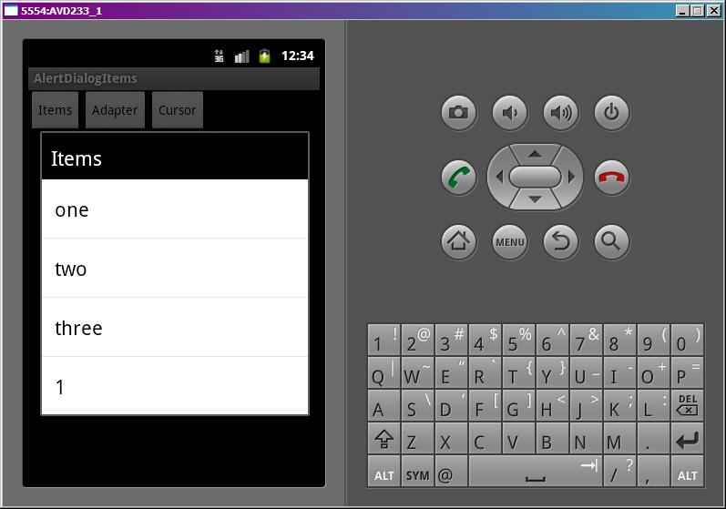
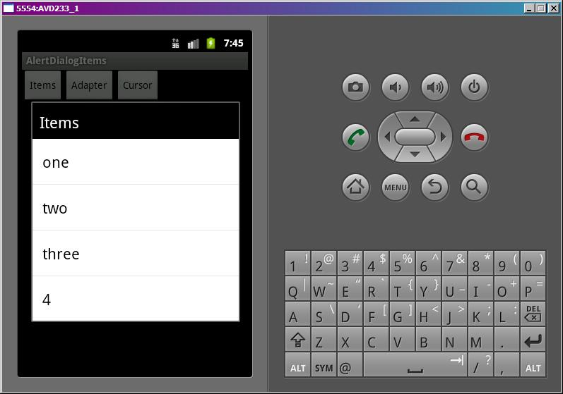

В этом уроке:
- формируем список в диалоге
Некоторые методы, которые использовались в уроке, устарели. После его прочтения рекомендую прочесть актуальные уроки по темам:
- создание диалогов с помощью фрагментов (уроки 104-105,110)
- работа с курсором через лоадер (уроки 135-136)
В диалог можно выводить не только текст, но и список значений. Диалоговый список может быть трех видов:
- без выбора элементов
- с одиночным выбором
- с множественным выбором
В этом уроке рассмотрим первый вид.
Научимся создавать диалог со списком, используя массив данных, адаптер или курсор. Кроме создания попробуем менять данные и обновлять список перед каждым показом. Для этого введем счетчик показов и будем показывать его в последней строке списка. Каждый вызов списка будет увеличивать счетчик на единицу и это должно отразиться в списке. Так мы убедимся, что он обновляется.
Создадим проект:
Project name: P0621_AlertDialogItems
Build Target: Android 4.0
Application name: AlertDialogItems
Package name: ru.startandroid.develop.p0621alertdialogitems
Create Activity: MainActivity
В strings.xml пропишем тексты:
<?xml version="1.0" encoding="utf-8"?>
<resources>
<string name="app_name">AlertDialogItems</string>
<string name="items">Items</string>
<string name="adapter">Adapter</string>
<string name="cursor">Cursor</string>
</resources>На экране main.xml три кнопки:
<?xml version="1.0" encoding="utf-8"?>
<LinearLayout
xmlns:android="http://schemas.android.com/apk/res/android"
android:layout_width="fill_parent"
android:layout_height="fill_parent"
android:orientation="horizontal">
<Button
android:id="@+id/btnItems"
android:layout_width="wrap_content"
android:layout_height="wrap_content"
android:text="@string/items"
android:onClick="onclick">
</Button>
<Button
android:id="@+id/btnAdapter"
android:layout_width="wrap_content"
android:layout_height="wrap_content"
android:text="@string/adapter"
android:onClick="onclick">
</Button>
<Button
android:id="@+id/btnCursor"
android:layout_width="wrap_content"
android:layout_height="wrap_content"
android:text="@string/cursor"
android:onClick="onclick">
</Button>
</LinearLayout>Для работы с БД выделим отдельный класс DB.java:
package ru.startandroid.develop.p0621alertdialogitems;
import android.content.ContentValues;
import android.content.Context;
import android.database.Cursor;
import android.database.sqlite.SQLiteDatabase;
import android.database.sqlite.SQLiteDatabase.CursorFactory;
import android.database.sqlite.SQLiteOpenHelper;
public class DB {
private static final String DB_NAME = "mydb";
private static final int DB_VERSION = 1;
private static final String DB_TABLE = "mytab";
public static final String COLUMN_ID = "_id";
public static final String COLUMN_TXT = "txt";
private static final String DB_CREATE =
"create table " + DB_TABLE + "(" +
COLUMN_ID + " integer primary key, " +
COLUMN_TXT + " text" +
");";
private final Context mCtx;
private DBHelper mDBHelper;
private SQLiteDatabase mDB;
public DB(Context ctx) {
mCtx = ctx;
}
// открыть подключение
public void open() {
mDBHelper = new DBHelper(mCtx, DB_NAME, null, DB_VERSION);
mDB = mDBHelper.getWritableDatabase();
}
// закрыть подключение
public void close() {
if (mDBHelper!=null) mDBHelper.close();
}
// получить все данные из таблицы DB_TABLE
public Cursor getAllData() {
return mDB.query(DB_TABLE, null, null, null, null, null, null);
}
// изменить запись в DB_TABLE
public void changeRec(int id, String txt) {
ContentValues cv = new ContentValues();
cv.put(COLUMN_TXT, txt);
mDB.update(DB_TABLE, cv, COLUMN_ID + " = " + id, null);
}
// класс по созданию и управлению БД
private class DBHelper extends SQLiteOpenHelper {
public DBHelper(Context context, String name, CursorFactory factory,
int version) {
super(context, name, factory, version);
}
// создаем и заполняем БД
@Override
public void onCreate(SQLiteDatabase db) {
db.execSQL(DB_CREATE);
ContentValues cv = new ContentValues();
for (int i = 1; i < 5; i++) {
cv.put(COLUMN_ID, i);
cv.put(COLUMN_TXT, "sometext " + i);
db.insert(DB_TABLE, null, cv);
}
}
@Override
public void onUpgrade(SQLiteDatabase db, int oldVersion, int newVersion) {
}
}
}Тут все как обычно. Методы для открытия и закрытия подключения, получение курсора с данными, и изменение записи по ID. Таблица всего из двух полей – _id и txt. При создании вставляем в таблицу 4 записи.
MainActivity.java:
package ru.startandroid.develop.p0621alertdialogitems;
import android.app.Activity;
import android.app.AlertDialog;
import android.app.Dialog;
import android.content.DialogInterface;
import android.content.DialogInterface.OnClickListener;
import android.database.Cursor;
import android.os.Bundle;
import android.util.Log;
import android.view.View;
import android.widget.ArrayAdapter;
import android.widget.BaseAdapter;
import android.widget.CursorAdapter;
import android.widget.ListAdapter;
public class MainActivity extends Activity {
final String LOG_TAG = "myLogs";
final int DIALOG_ITEMS = 1;
final int DIALOG_ADAPTER = 2;
final int DIALOG_CURSOR = 3;
int cnt = 0;
DB db;
Cursor cursor;
String data[] = { "one", "two", "three", "four" };
/** Called when the activity is first created. */
public void onCreate(Bundle savedInstanceState) {
super.onCreate(savedInstanceState);
setContentView(R.layout.main);
// открываем подключение к БД
db = new DB(this);
db.open();
cursor = db.getAllData();
startManagingCursor(cursor);
}
public void onclick(View v) {
changeCount();
switch (v.getId()) {
case R.id.btnItems:
showDialog(DIALOG_ITEMS);
break;
case R.id.btnAdapter:
showDialog(DIALOG_ADAPTER);
break;
case R.id.btnCursor:
showDialog(DIALOG_CURSOR);
break;
default:
break;
}
}
protected Dialog onCreateDialog(int id) {
AlertDialog.Builder adb = new AlertDialog.Builder(this);
switch (id) {
// массив
case DIALOG_ITEMS:
adb.setTitle(R.string.items);
adb.setItems(data, myClickListener);
break;
// адаптер
case DIALOG_ADAPTER:
adb.setTitle(R.string.adapter);
ArrayAdapter<String> adapter = new ArrayAdapter<String>(this,
android.R.layout.select_dialog_item, data);
adb.setAdapter(adapter, myClickListener);
break;
// курсор
case DIALOG_CURSOR:
adb.setTitle(R.string.cursor);
adb.setCursor(cursor, myClickListener, DB.COLUMN_TXT);
break;
}
return adb.create();
}
protected void onPrepareDialog(int id, Dialog dialog) {
// получаем доступ к адаптеру списка диалога
AlertDialog aDialog = (AlertDialog) dialog;
ListAdapter lAdapter = aDialog.getListView().getAdapter();
switch (id) {
case DIALOG_ITEMS:
case DIALOG_ADAPTER:
// проверка возможности преобразования
if (lAdapter instanceof BaseAdapter) {
// преобразование и вызов метода-уведомления о новых данных
BaseAdapter bAdapter = (BaseAdapter) lAdapter;
bAdapter.notifyDataSetChanged();
}
break;
case DIALOG_CURSOR:
break;
default:
break;
}
};
// обработчик нажатия на пункт списка диалога
OnClickListener myClickListener = new OnClickListener() {
public void onClick(DialogInterface dialog, int which) {
// выводим в лог позицию нажатого элемента
Log.d(LOG_TAG, "which = " + which);
}
};
// меняем значение счетчика
void changeCount() {
cnt++;
// обновляем массив
data[3] = String.valueOf(cnt);
// обновляем БД
db.changeRec(4, String.valueOf(cnt));
cursor.requery();
}
@Override
protected void onDestroy() {
super.onDestroy();
db.close();
}
}data – массив из 4 элементов. В таблице из DB.java у нас тоже 4 записи. Мы решили, что будем менять последний (четвертый) элемент/запись в данных и помещать туда кол-во показов.
В onCreate подключаемся к базе.
onclick – меняем значение счетчика и корректируем данные массива и БД, и в зависимости от нажатой кнопки вызываем соответствующий диалог.
onCreateDialog – создаем вызываемый диалог, используя AlertDialog.Builder. Диалог может построить список, используя один из следующих объектов:
1) Массив строк. Используется метод setItems. На вход подается массив и обработчик нажатия.
2) Адаптер. Мы создаем ArrayAdapter, используя массив data и стандартный layout select_dialog_item, и передаем его в метод setAdapter. Также передаем туда и обработчик.
3) Курсор БД. Вызываем метод setCursor. Передаем туда курсор, обработчик нажатия и имя поля, значение которого будет показано в списке.
Кроме списка указываем только заголовок. Кнопки и иконку не добавляем. В конце создаем и возвращаем Dialog.
Метод создания диалога (onCreateDialog) выполняется один раз, чтобы создать диалог. При последующих показах диалога выполняется метод onPrepareDialog. В нем мы будем обновлять данные списка. С помощью преобразований и методов getListView и getAdapter получим список из диалога, а потом адаптер из списка.
Далее для диалогов, использующих массив и адаптер мы выполняем преобразование до BaseAdapter, чтобы иметь возможность вызвать метод notifyDataSetChanged. Этот метод обновит список в соответствии с новыми данными.
Для диалога с курсором нет необходимости уведомлять адаптер о новых данных. Курсор это делает сам.
myClickListener – обработчик нажатия на пункты списка. Он у нас общий для всех диалогов и просто выводит в лог позицию нажатого пункта.
В changeCount увеличиваем счетчик на единицу и пишем это значение в четвертый элемент массива (нумерация с нуля) и в строку с _id = 4 в БД. Обновляем курсор.
В onDestroy закрываем подключение к БД.
Все сохраним и запустим. Повызываем диалоги и убедимся, что данные в них обновляются при каждом показе.


Клик на пункте списка задействует обработчик, выведет в лог его позицию и закроет диалог.
Если бы мы не реализовали метод onPrepareDialog, то списки диалогов (кроме курсорного) не обновлялись и выводили в последней строке те значения счетчика, при которых они создавались в методе onCreateDialog. Попробуйте закоментить содержимое onPrepareDialog и убедиться в этом.
UPD от 11.07.2012. Протестил этот урок на Android 3.2 - данные обновляются и без onPrepareDialog.